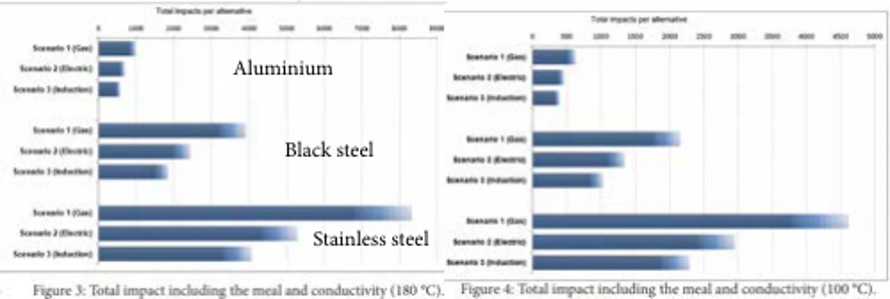
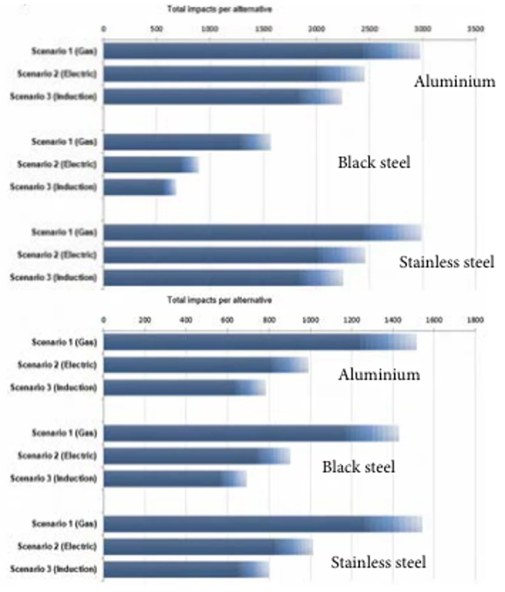
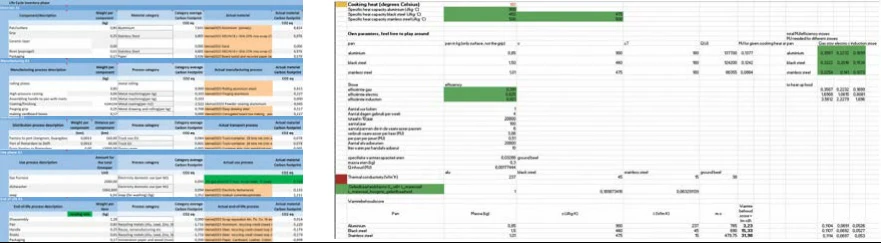

05 / Sustainability research
Cookware Lifecycle Assessment
An ISO-structured lifecycle assessment for BK comparing aluminium, black steel and stainless steel cookware across gas, electric and induction cooking scenarios.

Defining a meaningful comparison
The assessment considered a household of three cooking four hours a week over each material’s typical lifespan. Nine material–stove combinations were modelled with a cradle-to-cradle scope, making the assumptions behind the comparison explicit.

Following the whole lifecycle
I built a component-level inventory using Idemat2023, including pan surfaces, handles, coatings, rivets and packaging. The model traced manufacturing processes and transport from Jiangmen through Yantian to Rotterdam and Delft. Use-phase calculations considered heat capacity, conductivity, retention, stove efficiency and cleaning; end-of-life included material-specific recycling credits.

What actually changes the footprint
Under the modelled assumptions, the use phase dominated impact. Induction performed best across the compared stove types, while black steel had the lowest overall impact. Sensitivity checks on reference lifespan and dishwasher use showed how strongly cooking and cleaning habits affect the result. These are findings of this assessment, rather than universal claims about all cookware.